UI and frontend architecture description
Seven product surfaces on Next.js 15 App Router. Tokens as CSS variables. shadcn new-york primitives. Shells per surface. Catalog order for every new screen.
| Legal owner | BRIK64 Inc. (Delaware) |
|---|---|
| Identification | AKA-ARCH-UI-001 |
| Revision / issue | A · 2026-08-30 |
| Classification | Internal · Confidential |
| Sheet | 1 / 46 |
| Field | Value |
|---|---|
| Legal owner | BRIK64 Inc., Delaware, United States. Foundry. Initial legal owner. |
| Identification number | AKA-ARCH-UI-001 |
| Revision index | A |
| Date of issue | 2026-08-30 |
| Effective | On last approval signature |
| Next review | 2026-11-30 |
| Language | en (ISO 639) |
| Document type | Architecture description |
| Product | AKADEMATE |
| System of interest | AKADEMATE UI and frontend across marketing, academy, campus, ops and CMS |
| Classification | Internal · Confidential |
| Paper size | A4 |
| Normative sources | ISO/IEC/IEEE 42010 · ISO 7200 · arc42 · ADR-0004 · ACADEIMATE SPEC v1.5 |
| Machine ingest | AKA-ARCH-UI-001.ingest.json · AKA-ARCH-UI-001.AGENT.md · diagrams/*.mmd · Appendix A |
| Role | Organisation | Name | Date |
|---|---|---|---|
| Creator / Foundry | BRIK64 Inc. | ||
| Architect | AKADEMATE | ||
| Product | AKADEMATE | ||
| Design | AKADEMATE | ||
| Approval | BRIK64 Inc. / AKADEMATE |
| Stakeholder | Concern |
|---|---|
| Academy staff | Dense, keyboard-reachable dashboard. One chrome. Tokens follow the academy brand. |
| Learners and teachers | Campus and public pages that read as the academy, with a clear login. |
| Platform ops | A separate ops shell. Dark default. No academy sidebar mix-in. |
| Foundry / design | One catalog, one token pipeline, WCAG AA, no painted-blank screens. |
| Implementing agent | Codes, Mermaid source, and a prompt that names slugs before paint. |
| Viewpoint | View in this description |
|---|---|
| Context | Seven surfaces. Two public webs. Live product vs scaffold. |
| Functional | Shells, primitives, catalog order, auth composition. |
| Runtime | Token injection, class-based light/dark, compose sequence. |
| Deployment | App packages, design-system pages, Storybook. |
| Quality | AA contrast, focus, keyboard, motion policy. |
Companion description: AKA-ARCH-SAAS-001 (Cloudflare runtime). This document owns presentation.
| Cover | 1 | |
| 0.1 | Identification | 2 |
| 0.1b | Approvals | 3 |
| 0.2 | Stakeholders and concerns | 4 |
| 0.3 | Viewpoints | 5 |
| 0.4 | Contents | 6 |
| 1 | Introduction and goals | 7 |
| 2 | Constraints | 8 |
| 3 | Context and scope | 9 |
| 4 | Solution strategy | 10 |
| 5.1 | Building blocks: surfaces | 11 |
| 5.2 | Building blocks: tokens | 12 |
| 5.3 | Building blocks: primitives | 13 |
| 6.1 | Runtime: compose | 14 |
| 6.2 | Runtime: theming | 15 |
| 7.1 | Deployment: apps | 16 |
| 7.2 | Deployment: design system | 17 |
| 8.1 | Shells | 18 |
| 8.2 | Auth | 19 |
| 8.3 | Catalog and motion | 20 |
| 8.4 | Access | 21 |
| 9 | Architecture decisions | 22 |
| 10 | Quality requirements | 23 |
| 11 | Glossary and references | 24 |
| 12 | Agent ingest | 25 |
| 12.1 | Surface codes | 26 |
| 12.2 | Token and shell codes | 27 |
| 12.3 | Implementation prompt | 28 |
| 12.4 | Implementation sequence | 29 |
| Fig. 1 | Product surfaces | 30 |
| Fig. 2 | Two public webs | 31 |
| Fig. 3 | Token pipeline | 32 |
| Fig. 4 | Primitive ownership | 33 |
| Fig. 5 | Dashboard shell | 34 |
| Fig. 6 | Tenant public shell | 35 |
| Fig. 7 | Theming | 36 |
| Fig. 8 | Auth surfaces | 37 |
| Fig. 9 | Catalog order | 38 |
| Fig. 10 | Design-system delivery | 39 |
| Fig. 11 | Compose sequence | 40 |
| Fig. 12 | Quality and access | 41 |
| A.1 | Mermaid FIG-01 to FIG-03 | 42 |
| A.2 | Mermaid FIG-04 to FIG-06 | 43 |
| A.3 | Mermaid FIG-07 to FIG-09 | 44 |
| A.4 | Mermaid FIG-10 to FIG-12 | 45 |
| Back cover | 46 |
AKADEMATE presents one product through several windows: marketing, academy dashboard, tenant public site, campus, platform ops, access hub, and CMS admin.
The goal is a single visual language. Tokens in CSS variables. Primitives from shadcn new-york. A shell per surface. An implementing agent reads codes and Mermaid the same way a human reads the sheet.
theme.colors and PostCSS @tailwindcss/postcss.System of interest: presentation for AKADEMATE. Runtime compute and data live in AKA-ARCH-SAAS-001.
In scope: surfaces, tokens, primitives, shells, theming, auth screens, catalog order, access, design-system delivery.
Live product UI: SURF-WEB, SURF-DASH, SURF-PUBLIC, SURF-CAMPUS, SURF-OPS, SURF-CMS. SURF-PORTAL is the access hub. apps/campus and apps/ops are scaffolds beside the live surfaces.
Figure 1.
@akademate/ui while the Payload-config alias keeps resolving.theme.colors.Seven windows. One product. Figure 1.
| Code | Location | Role |
|---|---|---|
| SURF-WEB | apps/web | SaaS marketing |
| SURF-DASH | apps/tenant-admin (app)/(dashboard) | Academy dashboard |
| SURF-PUBLIC | apps/tenant-admin (public) | Tenant public site |
| SURF-CAMPUS | apps/tenant-admin (app)/campus | Academy campus |
| SURF-OPS | apps/admin-client | Platform ops |
| SURF-PORTAL | apps/portal | Access hub |
| SURF-CMS | Payload admin | CMS chrome |
SURF-WEB is SaaS marketing on akademate.com. SURF-PUBLIC is the academy site on the tenant host. Figure 2.
Three-layer tokens: primitive, semantic, tenant. Tailwind v4 maps them through TOK-THEME-V4. Figure 3.
| Code | Source | Role |
|---|---|---|
| TOK-BASE | packages/ui/src/tokens/base.css | Primitive palette and type |
| TOK-SEM | packages/ui/src/tokens/semantic.css | Purpose aliases |
| TOK-TENANT | packages/ui/src/tokens/tenant.css | Brand accent |
| TOK-THEME-V4 | @theme inline | Tailwind v4 color map |
| TOK-RUNTIME | TenantBrandingProvider | Injects --primary and --sidebar |
Locked defaults: Manrope in TOK-BASE, runtime primary #0066CC, sidebar #0F2440. Light and dark as .light / .dark on html.
Canonical catalog: shadcn new-york in tenant-admin components.json, cssVariables: true, iconLibrary: lucide. Dashboard imports @payload-config/components/ui. Figure 4.
Stable slugs: accordion, alert, alert-dialog, avatar, badge, breadcrumb, button, card, checkbox, dialog, dropdown-menu, input, label, select, separator, sheet, sidebar, skeleton, switch, table, tabs, textarea, tooltip.
@akademate/ui exports tokens and Pill. The target is the same slugs in that package. SURF-WEB, SURF-PORTAL and SURF-OPS keep smaller local trees until the lift lands.
A route selects a shell. The shell applies tokens. The page composes primitives. Figure 11.
light or dark on html.Forms: React Hook Form and zod on dashboard flows.
Three knobs, one tree. Figure 7.
light / dark on html. Storage key akademate-theme on the academy app. Ops uses akademate-ops-theme, dark default.akademate_theme cookie into the same variables.Tenant public injects --brand from the academy primary color. Overlay type and footer copy stay variables and content, not a fork of button or card.
| Surface | Package | Notes |
|---|---|---|
| SURF-WEB | apps/web | Marketing Worker. Completes Tailwind v4 cutover. |
| SURF-DASH, PUBLIC, CAMPUS, CMS | apps/tenant-admin | Primary product UI. Payload admin in the same app. |
| SURF-OPS | apps/admin-client | Platform ops. |
| SURF-PORTAL | apps/portal | Access hub. |
Scaffolds apps/campus and apps/ops remain beside the live surfaces until callers move to SURF-CAMPUS and SURF-OPS.
Delivery surfaces, not a second token source. Figure 10.
/design-system and template sandbox./design-system playground.One shell per window. Figures 5 and 6.
| Code | Implementation | Surface |
|---|---|---|
| SHELL-DASH | AppSidebar + SidebarProvider | Dashboard |
| SHELL-PUBLIC | Public header and footer | Tenant public |
| SHELL-OPS | OpsSidebar | Platform ops |
| SHELL-CAMPUS | CampusNavbar | Campus |
| SHELL-AUTH | Auth canvas | Staff login |
| SHELL-MKT | Marketing header and footer | SURF-WEB |
SHELL-DASH: AppSidebar, SidebarProvider, SidebarInset, DashboardFooter, CommandPalette, NotificationBell, ThemeToggle. Canvas token --dashboard-canvas.
Every live login is Card, Input, Button. Figure 8.
/auth/login, signup, forgot-password, accept-invite. SHELL-AUTH canvas./campus/login./login./login continues to the academy app login. /registro is the lead form.Do not invent a hero, pricing, sidebar, form, empty state, or chat. Figure 9.
| Code | Source | When |
|---|---|---|
| CAT-REPO | components/ui in the app tree | First |
| CAT-SHADCN | shadcn new-york official slug | Second |
| CAT-MOTION | Magic UI or Aceternity by slug | Marketing motion |
| CAT-EXT | One 21st.dev or ReUI block | If the pattern is missing |
Chat UI is the official shadcn block. Product chrome motion is CSS, Radix, tw-animate. Marketing motion is the Motion library by slug.
Figure 12.
aria-hidden. Icon-only buttons: accessible name.| Code | Decision |
|---|---|
| ADR-U1 | Product UIs are Next.js 15 App Router. |
| ADR-U2 | Color is CSS variables in HSL channels. Tenant branding writes --primary and --sidebar. |
| ADR-U3 | The shadcn new-york catalog lives in tenant-admin. Dashboard imports the Payload-config alias. |
| ADR-U4 | @akademate/ui ships tokens and Pill. Primitives migrate into that package. |
| ADR-U5 | Dashboard chrome reads --sidebar and TenantBranding. |
| ADR-U6 | Tenant public is its own html document, separate from the dashboard shell. |
| ADR-U7 | Platform ops UI is apps/admin-client. |
| ADR-U8 | Campus product routes live under tenant-admin. apps/campus is a scaffold. |
| ADR-U9 | Light and dark are a class on html. |
| ADR-U10 | Compose from catalog order: repo, official shadcn, motion by slug. |
| ADR-U11 | Tailwind v4 with theme.colors and @tailwindcss/postcss. SURF-WEB completes that cutover. |
| ADR-U12 | Motion on product chrome is CSS, Radix, and tw-animate. Marketing motion uses the Motion library by slug. |
| Quality | Requirement |
|---|---|
| Accessibility | AA, focus, keyboard, names on icon buttons. |
| Consistency | One catalog. One token pipeline. Shell per surface. |
| Tenant brand | Variables only. Dashboard chrome stays SaaS-tokenized. |
| Performance | next/image, self-hosted fonts, CSS animation on chrome. |
| Evolvability | Primitive lift into @akademate/ui with the alias intact. |
| Term | Definition |
|---|---|
| Surface | A product window with its own shell and routes. |
| Primitive | A catalog component (button, dialog, sidebar). |
| Token | A CSS variable for color, type, space, or radius. |
| Host overlay | Tenant public type, footer and contact channels on top of the same primitives. |
| Catalog order | Repo, official shadcn, motion by slug, one extension block. |
| Rev | Date | Change |
|---|---|---|
| A | 2026-08-30 | Initial UI and frontend architecture description. |
This description ships a machine form so an implementing agent reads the same source a human reads on paper.
AKA-ARCH-UI-001.ingest.json: codes, ADRs, surfaces, shells, tokens, catalog, every figure as Mermaid.diagrams/*.mmd: figure sources, MIME text/vnd.mermaid.AKA-ARCH-UI-001.AGENT.md: implementation prompt.Each figure sheet names its source. Example: FIG-01 · diagrams/01-surfaces.mmd. Appendix A repeats the Mermaid as selectable text.
| Code | Location | Role |
|---|---|---|
| SURF-WEB | apps/web | SaaS marketing |
| SURF-DASH | apps/tenant-admin (app)/(dashboard) | Academy dashboard |
| SURF-PUBLIC | apps/tenant-admin (public) | Tenant public site |
| SURF-CAMPUS | apps/tenant-admin (app)/campus | Academy campus |
| SURF-OPS | apps/admin-client | Platform ops |
| SURF-PORTAL | apps/portal | Access hub |
| SURF-CMS | Payload admin | CMS chrome |
Entry codes: INGEST-JSON, INGEST-PROMPT, INGEST-LLMS, FIG-01 to FIG-12, ADR-U1 to ADR-U12.
| Code | Source | Role |
|---|---|---|
| TOK-BASE | packages/ui/src/tokens/base.css | Primitive palette and type |
| TOK-SEM | packages/ui/src/tokens/semantic.css | Purpose aliases |
| TOK-TENANT | packages/ui/src/tokens/tenant.css | Brand accent |
| TOK-THEME-V4 | @theme inline | Tailwind v4 color map |
| TOK-RUNTIME | TenantBrandingProvider | Injects --primary and --sidebar |
| Code | Implementation | Surface |
|---|---|---|
| SHELL-DASH | AppSidebar + SidebarProvider | Dashboard |
| SHELL-PUBLIC | Public header and footer | Tenant public |
| SHELL-OPS | OpsSidebar | Platform ops |
| SHELL-CAMPUS | CampusNavbar | Campus |
| SHELL-AUTH | Auth canvas | Staff login |
| SHELL-MKT | Marketing header and footer | SURF-WEB |
INGEST-PROMPT · AKA-ARCH-UI-001.AGENT.md · part 1 of 2
# AKA-ARCH-UI-001 agent implementation prompt You are implementing AKADEMATE UI and frontend from architecture description AKA-ARCH-UI-001 (BRIK64 Inc.). ## Ingest order 1. Read AKA-ARCH-UI-001.ingest.json. Canonical machine form: codes, ADRs, surfaces, shells, tokens, catalog, figures as Mermaid. 2. Read each diagrams/*.mmd named in that file. PNG files are renderings of those sources. 3. Read this file for the execution contract. 4. Read AKA-ARCH-UI-001.html or the PDF text layer for the ingest sheets, the figure atlas, and Appendix A. Appendix A holds Mermaid as selectable text. Figure sheets name the source path (example: FIG-01 · diagrams/01-surfaces.mmd). ## Execution contract Apply every ADR-U1 through ADR-U12. Paint from catalog. Search the repo primitive, then official shadcn slug, then Magic UI or Aceternity by slug for marketing motion. Name Superficie / Catalogo / Slug / Source / Tokens / Salto on every new visual surface. Tokens flow TOK-BASE to TOK-SEM to TOK-TENANT to TOK-THEME-V4. Runtime accent is TOK-RUNTIME TenantBrandingProvider writing --primary, --sidebar, --brand. Default primary #0066CC. Sidebar default #0F2440. SURF-DASH uses SHELL-DASH (AppSidebar, SidebarProvider, SidebarInset). SURF-PUBLIC uses SHELL-PUBLIC on its own html document. SURF-OPS uses SHELL-OPS. SURF-CAMPUS uses SHELL-CAMPUS. SURF-WEB uses SHELL-MKT. Dashboard chrome is SaaS tokens. Tenant public may carry a host overlay (type, footer, contact channels) through CSS variables, not a second primitive catalog. Canonical primitives today: tenant-admin components/ui, aliased as @payload-config/components/ui. Target: the same slugs in @akademate/ui. Auth screens compose Card, Input, Button. SURF-WEB /login routes to the academy app login. Quality: WCAG AA contrast, visible focus, keyboard path, semantic HTML. Product chrome uses CSS and Radix animation. SURF-WEB completes Tailwind v4 theme.colors.
INGEST-PROMPT · AKA-ARCH-UI-001.AGENT.md · part 2 of 2
## Implementation sequence 1. Map SURF-* to apps and route groups. 2. Wire TOK-* into each live surface. Remove duplicate palettes once the package import is in place. 3. Keep CAT-SHADCN slugs stable (button, card, dialog, sheet, sidebar, input, table, tabs, select, badge, tooltip). 4. Implement SHELL-DASH, SHELL-PUBLIC, SHELL-OPS, SHELL-CAMPUS, SHELL-AUTH, SHELL-MKT. 5. Auth: Card + Input + Button on each live login. 6. Design-system pages and Storybook stay delivery surfaces, not a second source of tokens. 7. Cut SURF-WEB to Tailwind v4 theme.colors and @tailwindcss/postcss. 8. Lift primitives from tenant-admin into @akademate/ui while the alias keeps working. ## Done when Every figure in ingest.json has a matching .mmd. Every SURF, SHELL, TOK, CAT, ADR-U code is present in code or this pack. A new screen names a catalog slug. verify_print_pdf.py exits 0 on this PDF.
FIG-01 · diagrams/01-surfaces.mmd · text/vnd.mermaid · PNG is a rendering of that source
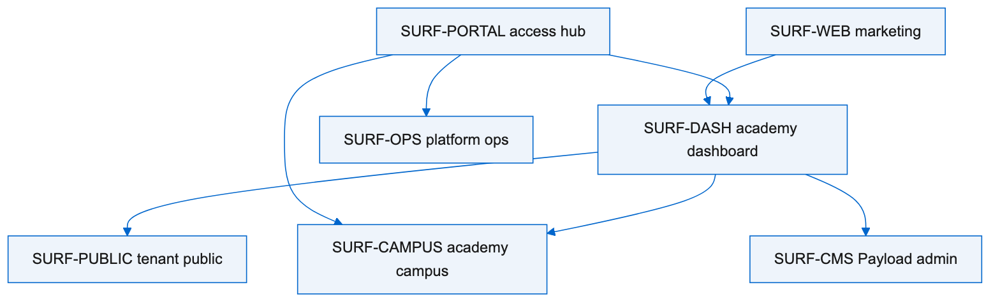
FIG-02 · diagrams/02-dual-public.mmd · text/vnd.mermaid · PNG is a rendering of that source
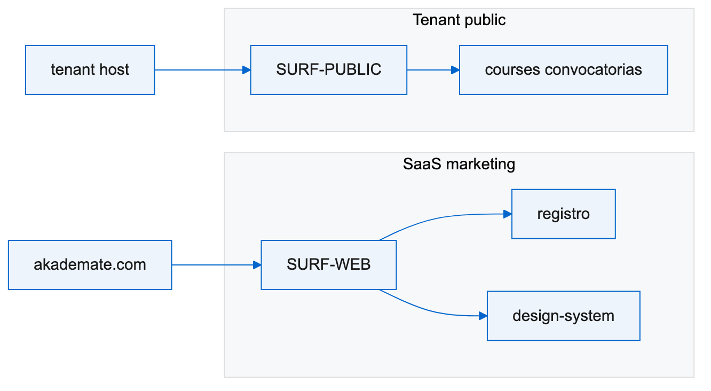
FIG-03 · diagrams/03-token-pipeline.mmd · text/vnd.mermaid · PNG is a rendering of that source
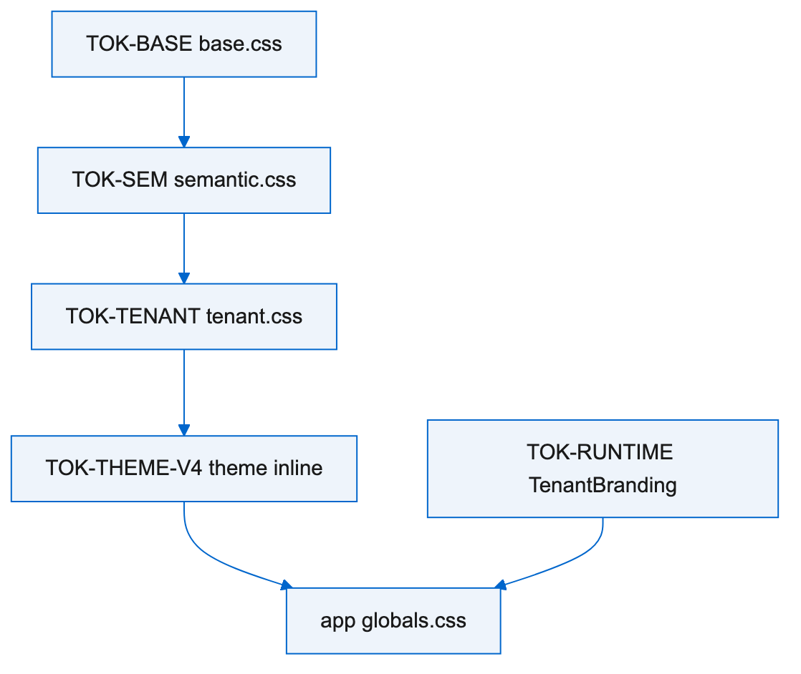
FIG-04 · diagrams/04-primitive-ownership.mmd · text/vnd.mermaid · PNG is a rendering of that source
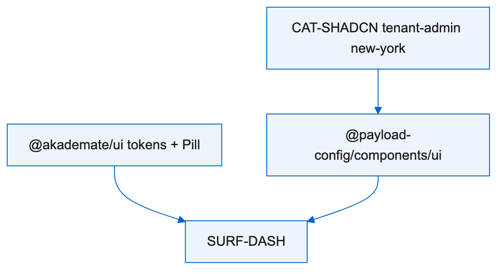
FIG-05 · diagrams/05-dashboard-shell.mmd · text/vnd.mermaid · PNG is a rendering of that source
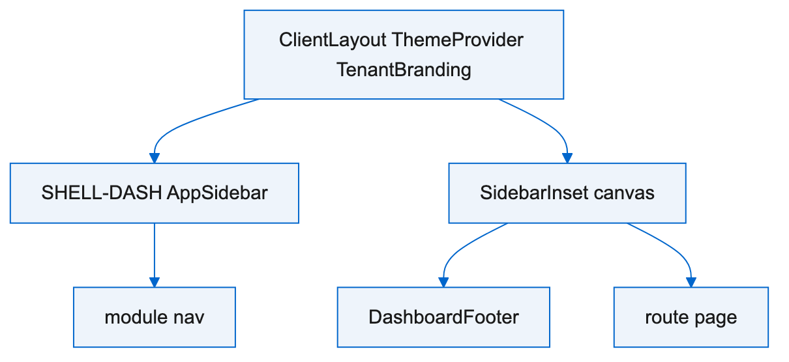
FIG-06 · diagrams/06-public-shell.mmd · text/vnd.mermaid · PNG is a rendering of that source
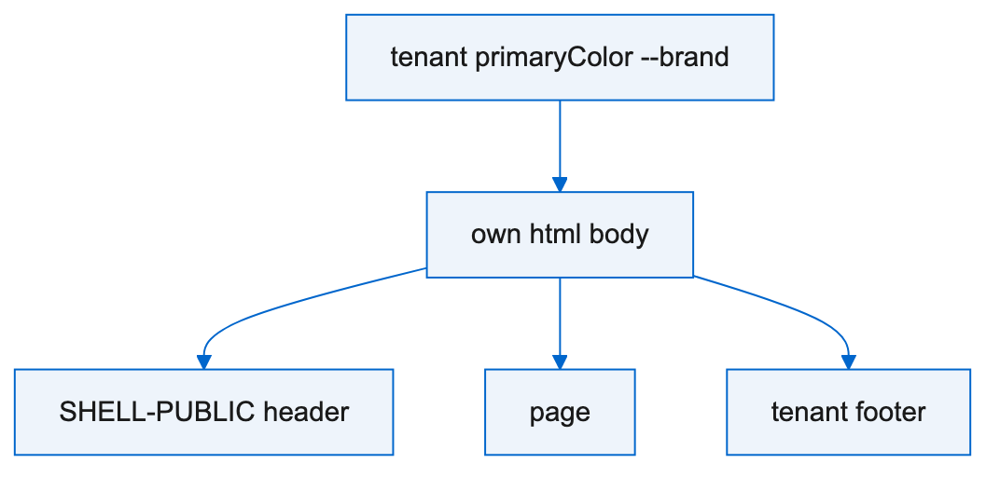
FIG-07 · diagrams/07-theming.mmd · text/vnd.mermaid · PNG is a rendering of that source
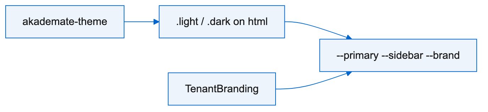
FIG-08 · diagrams/08-auth-surfaces.mmd · text/vnd.mermaid · PNG is a rendering of that source
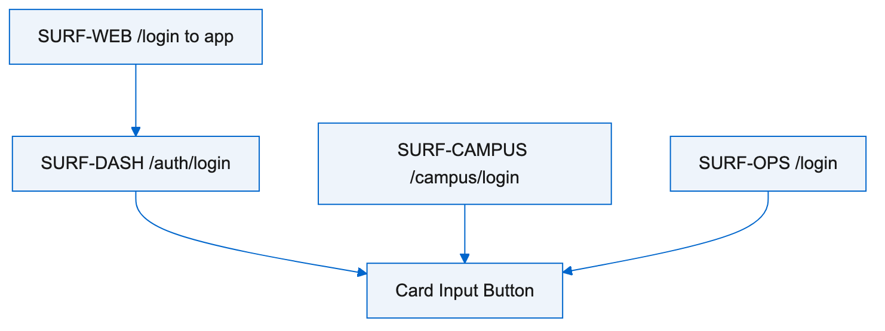
FIG-09 · diagrams/09-catalog-order.mmd · text/vnd.mermaid · PNG is a rendering of that source
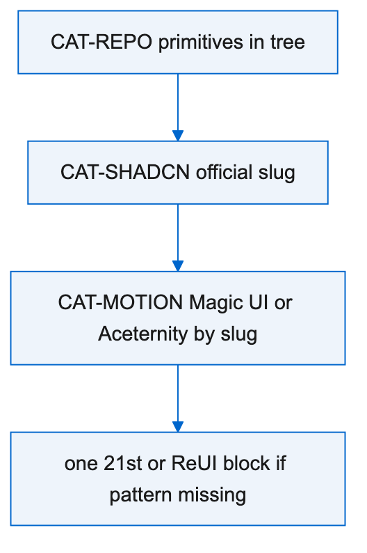
FIG-10 · diagrams/10-design-system-delivery.mmd · text/vnd.mermaid · PNG is a rendering of that source
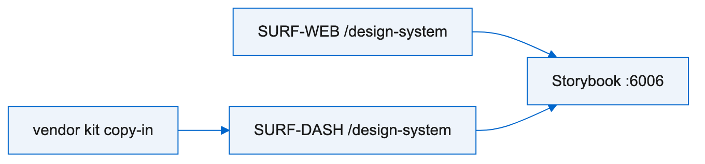
FIG-11 · diagrams/11-compose-sequence.mmd · text/vnd.mermaid · PNG is a rendering of that source
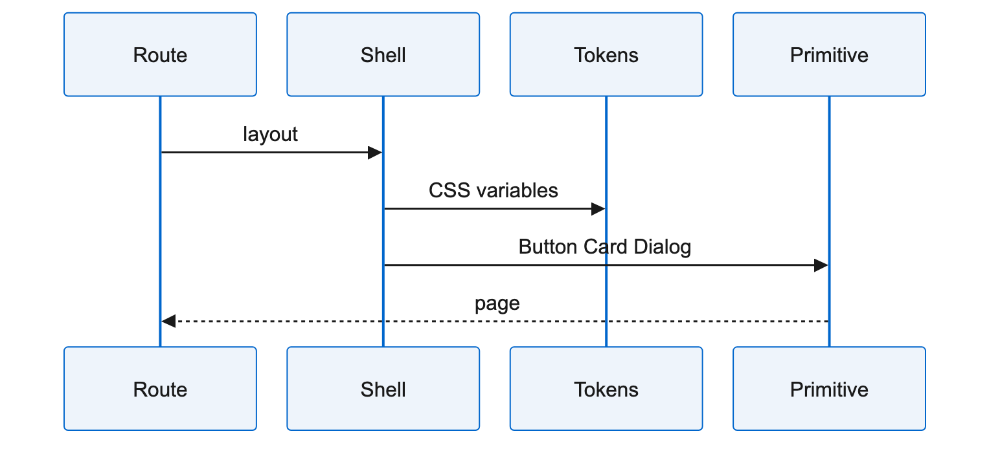
FIG-12 · diagrams/12-quality-a11y.mmd · text/vnd.mermaid · PNG is a rendering of that source
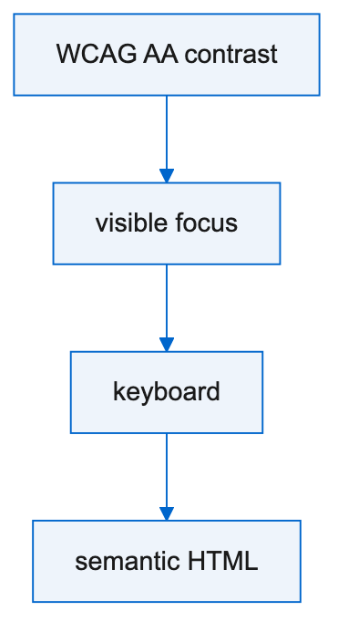
FIG-01 · diagrams/01-surfaces.mmd · text/vnd.mermaid
flowchart TB MKT[SURF-WEB marketing] DASH[SURF-DASH academy dashboard] PUB[SURF-PUBLIC tenant public] CAMP[SURF-CAMPUS academy campus] OPS[SURF-OPS platform ops] PORT[SURF-PORTAL access hub] CMS[SURF-CMS Payload admin] MKT --> DASH PORT --> DASH PORT --> CAMP PORT --> OPS DASH --> PUB DASH --> CAMP DASH --> CMS
FIG-02 · diagrams/02-dual-public.mmd · text/vnd.mermaid
flowchart LR
subgraph SAAS["SaaS marketing"]
WEB[SURF-WEB]
REG[registro]
DS[design-system]
WEB --> REG
WEB --> DS
end
subgraph TENANT["Tenant public"]
PUB[SURF-PUBLIC]
COURSES[courses convocatorias]
PUB --> COURSES
end
HOST[tenant host] --> PUB
AKA[akademate.com] --> WEB
FIG-03 · diagrams/03-token-pipeline.mmd · text/vnd.mermaid
flowchart TB BASE[TOK-BASE base.css] SEM[TOK-SEM semantic.css] TEN[TOK-TENANT tenant.css] V4[TOK-THEME-V4 theme inline] RT[TOK-RUNTIME TenantBranding] APP[app globals.css] BASE --> SEM SEM --> TEN TEN --> V4 V4 --> APP RT --> APP
FIG-04 · diagrams/04-primitive-ownership.mmd · text/vnd.mermaid
flowchart TB PKG["@akademate/ui tokens + Pill"] SHAD[CAT-SHADCN tenant-admin new-york] ALIAS["@payload-config/components/ui"] DASH[SURF-DASH] PKG --> DASH SHAD --> ALIAS ALIAS --> DASH
FIG-05 · diagrams/05-dashboard-shell.mmd · text/vnd.mermaid
flowchart TB ROOT[ClientLayout ThemeProvider TenantBranding] SIDE[SHELL-DASH AppSidebar] INSET[SidebarInset canvas] FOOT[DashboardFooter] ROOT --> SIDE ROOT --> INSET INSET --> FOOT SIDE --> NAV[module nav] INSET --> PAGE[route page]
FIG-06 · diagrams/06-public-shell.mmd · text/vnd.mermaid
flowchart TB HTML[own html body] HEAD[SHELL-PUBLIC header] MAIN[page] FOOT[tenant footer] HTML --> HEAD HTML --> MAIN HTML --> FOOT BRAND[tenant primaryColor --brand] --> HTML
FIG-07 · diagrams/07-theming.mmd · text/vnd.mermaid
flowchart LR CLASS[".light / .dark on html"] VARS["--primary --sidebar --brand"] COOKIE[akademate-theme] CLASS --> VARS COOKIE --> CLASS TB[TenantBranding] --> VARS
FIG-08 · diagrams/08-auth-surfaces.mmd · text/vnd.mermaid
flowchart TB STAFF[SURF-DASH /auth/login] LEARN[SURF-CAMPUS /campus/login] OPS[SURF-OPS /login] WEB[SURF-WEB /login to app] STAFF --> CARD[Card Input Button] LEARN --> CARD OPS --> CARD WEB --> STAFF
FIG-09 · diagrams/09-catalog-order.mmd · text/vnd.mermaid
flowchart TB R[CAT-REPO primitives in tree] S[CAT-SHADCN official slug] M[CAT-MOTION Magic UI or Aceternity by slug] X[one 21st or ReUI block if pattern missing] R --> S S --> M M --> X
FIG-10 · diagrams/10-design-system-delivery.mmd · text/vnd.mermaid
flowchart LR WEBDS[SURF-WEB /design-system] DASHDS[SURF-DASH /design-system] SB[Storybook :6006] VEND[vendor kit copy-in] WEBDS --> SB DASHDS --> SB VEND --> DASHDS
FIG-11 · diagrams/11-compose-sequence.mmd · text/vnd.mermaid
sequenceDiagram participant R as Route participant L as Shell participant T as Tokens participant P as Primitive R->>L: layout L->>T: CSS variables L->>P: Button Card Dialog P-->>R: page
FIG-12 · diagrams/12-quality-a11y.mmd · text/vnd.mermaid
flowchart TB AA[WCAG AA contrast] FOCUS[visible focus] KEY[keyboard] SEM[semantic HTML] AA --> FOCUS FOCUS --> KEY KEY --> SEM
BRIK64 Inc. · Delaware
AKA-ARCH-UI-001
Rev A · 2026-08-30 · en
Internal · Confidential